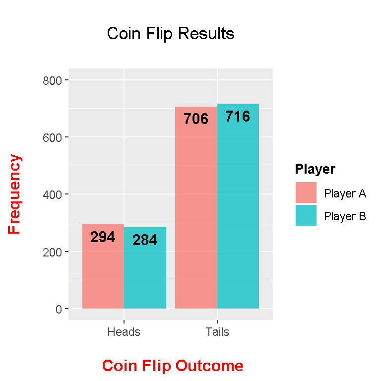
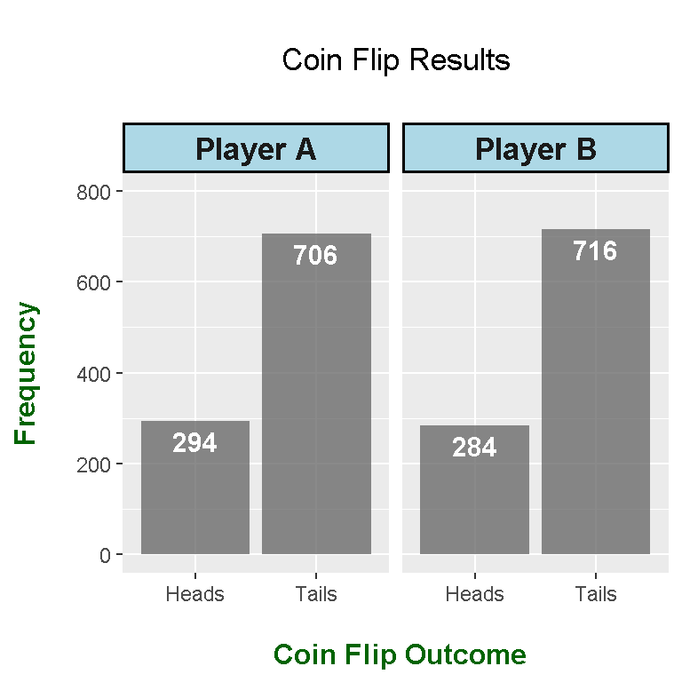

The ggplot2 package is first loaded into R.
library("ggplot2")
We have two players A and B who each an unfair coin. This unfair coin has a 30% chance of getting heads and a 70% chance of getting tails. Both players flip this coin 1000 times each. This can be simulated in R using the sample() function.
# Flip a unfair coin 1000 times
flip_results_A <- sample(c("Heads", "Tails"), size = 1000, replace = TRUE, prob = c(0.3, 0.7))
flip_results_B <- sample(c("Heads", "Tails"), size = 1000, replace = TRUE, prob = c(0.3, 0.7))
We can see the results of the coin flips using the table() function.
# Get counts of the die rolls:
table(flip_results_A) ; table(flip_results_B)## flip_results_A
## Heads Tails
## 287 713## flip_results_B
## Heads Tails
## 304 696
The next lines of code is about putting the results together in a data table format.
# Merge the results from Player A and Player B together:
# Format: Player A | Player A flip results (1000 rows)
# Player B | Player B flip results (1000 rows)
column1 <- c(rep("Player A", 1000), rep("Player B", 1000))
column2 <- c(flip_results_A, flip_results_B)
outcome_data <- cbind(column1, column2)
flip_results <- data.frame(Player = factor(column1, levels = c("Player A", "Player B")),
Result = column2)
# A peek of the merged data:
head(flip_results); tail(flip_results)## Player Result
## 1 Player A Tails
## 2 Player A Heads
## 3 Player A Tails
## 4 Player A Heads
## 5 Player A Tails
## 6 Player A Heads## Player Result
## 1995 Player B Tails
## 1996 Player B Tails
## 1997 Player B Tails
## 1998 Player B Tails
## 1999 Player B Tails
## 2000 Player B Heads
These coin flip results can be converted into a two by two table as a different visual. For graphing purposes, this 2 by 2 table is converted into a data frame.
table(flip_results)## Result
## Player Heads Tails
## Player A 287 713
## Player B 304 696# The two by two table into a data frame for plotting:
results <- data.frame(table(flip_results))
To obtain side by side bar graphs in ggplot2, we need a lot of parts on top of the ggplot() command.
geom_bar(stat = “identity”, position = position_dodge(), alpha = 0.75) gives the side by side bar graphs
ylim(0, 800) gives limits on the y-axis values
The geom_text() line adds labels to the bar graphs. Note that position_dodge is needed as we used position dodge was used in geom_bar().
labs() gives labels depending on what is specified
The theme() function allows for additional aesthetic options such as a centered title and font sizes.
# Plotting side by side bar graphs:
# http://www.cookbook-r.com/Graphs/Bar_and_line_graphs_(ggplot2)/
# R Graphics Cookbook by Winston Chang Reference
# Result of heads or tails in x = axis, Counts as y axis, diff colours for each player.
# Put labels:
ggplot(data = results, aes(x = Result, y = Freq, fill = Player)) +
geom_bar(stat = "identity", position = position_dodge(), alpha = 0.75) +
ylim(0,800) +
geom_text(aes(label = Freq), fontface = "bold", vjust = 1.5,
position = position_dodge(.9), size = 4) +
labs(x = "\n Coin Flip Outcome", y = "Frequency\n", title = "\n Coin Flip Results \n") +
theme(plot.title = element_text(hjust = 0.5),
axis.title.x = element_text(face="bold", colour="red", size = 12),
axis.title.y = element_text(face="bold", colour="red", size = 12),
legend.title = element_text(face="bold", size = 10))
In the above plot, we have four bars in one graph where the Player A bars are beside the Player B bars. Adding facet_grid(. ~Player) will turn this bar graph plot in a way where there is one bar graph plot for Player A and another bar graph plot for player B right beside it.
# Facet_grid:
ggplot(data = results, aes(x = Result, y = Freq)) +
geom_bar(stat = "identity", alpha = 0.7) +
facet_grid(. ~Player) +
ylim(0,800) +
geom_text(aes(label = Freq), fontface = "bold", vjust = 1.5, colour = "white", size = 4) +
labs(x = "\n Coin Flip Outcome", y = "Frequency\n", title = "\n Coin Flip Results \n") +
theme(plot.title = element_text(hjust = 0.5),
axis.title.x = element_text(face="bold", colour="darkgreen", size = 12),
axis.title.y = element_text(face="bold", colour="darkgreen", size = 12),
legend.title = element_text(face="bold", size = 10),
strip.background = element_rect(fill="lightblue", colour="black", size=1),
strip.text = element_text(face="bold", size=rel(1.2)))
Note that the position_dodge() options were removed as they are not needed. To highlight the Player A and Player B font text and the bars, the strip.background and strip.text options are used.